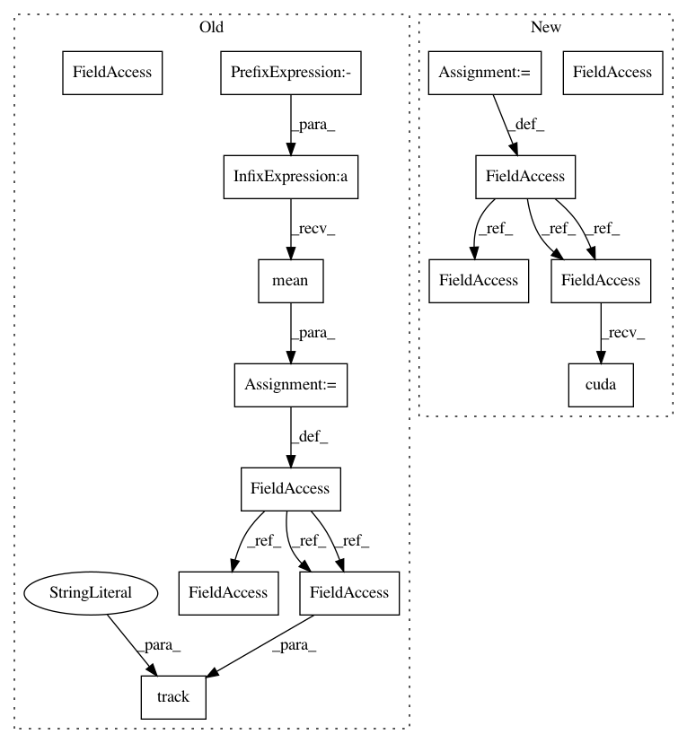

99abcc6e9b57f441999ce10dbc31ca1bed79c356,ch15/04_train_ppo.py,,,#,55
Before Change
surr_obj_v = adv_v * torch.exp(logprob_pi_v - logprob_old_pi_v)
clipped_surr_v = torch.clamp(surr_obj_v, 1.0 - PPO_EPS, 1.0 + PPO_EPS)
loss_policy_v = -torch.min(surr_obj_v, clipped_surr_v).mean()
entropy_loss_v = ENTROPY_BETA * (-(torch.log(2*math.pi*var_v) + 1)/2).mean()
loss_v = loss_policy_v + entropy_loss_v + loss_value_v
loss_v.backward()
optimizer.step()
tb_tracker.track("advantage", adv_v, step_idx)
tb_tracker.track("values", value_v, step_idx)
tb_tracker.track("batch_rewards", vals_ref_v, step_idx)
tb_tracker.track("loss_entropy", entropy_loss_v, step_idx)
tb_tracker.track("loss_policy", loss_policy_v, step_idx)
tb_tracker.track("loss_value", loss_value_v, step_idx)
tb_tracker.track("loss_total", loss_v, step_idx)
After Change
test_env = gym.make(ENV_ID)
net_act = model.ModelActor(envs[0].observation_space.shape[0], envs[0].action_space.shape[0])
net_crt = model.ModelCritic(envs[0].observation_space.shape[0])
if args.cuda:
net_act.cuda()
net_crt.cuda()
print(net_act)
print(net_crt)
writer = SummaryWriter(comment="-ppo_" + args.name)
agent = model.AgentA2C(net_act, cuda=args.cuda)
exp_source = ptan.experience.ExperienceSourceFirstLast(envs, agent, GAMMA, steps_count=REWARD_STEPS)
opt_act = optim.Adam(net_act.parameters(), lr=LEARNING_RATE_ACTOR)
opt_crt = optim.Adam(net_crt.parameters(), lr=LEARNING_RATE_CRITIC)
batch = []
best_reward = None
with ptan.common.utils.RewardTracker(writer) as tracker:
with ptan.common.utils.TBMeanTracker(writer, batch_size=100) as tb_tracker:
for step_idx, exp in enumerate(exp_source):
rewards_steps = exp_source.pop_rewards_steps()
if rewards_steps:
rewards, steps = zip(*rewards_steps)
tb_tracker.track("episode_steps", np.mean(steps), step_idx)
tracker.reward(np.mean(rewards), step_idx)
if step_idx % TEST_ITERS == 0:
ts = time.time()
rewards, steps = test_net(net_act, test_env, cuda=args.cuda)
print("Test done is %.2f sec, reward %.3f, steps %d" % (
time.time() - ts, rewards, steps))
writer.add_scalar("test_reward", rewards, step_idx)
writer.add_scalar("test_steps", steps, step_idx)
if best_reward is None or best_reward < rewards:
if best_reward is not None:
print("Best reward updated: %.3f -> %.3f" % (best_reward, rewards))
name = "best_%+.3f_%d.dat" % (rewards, step_idx)
fname = os.path.join(save_path, name)
torch.save(net.state_dict(), fname)
best_reward = rewards
batch.append(exp)
if len(batch) < BATCH_SIZE:
continue
states_v, actions_v, vals_ref_v = \
common.unpack_batch_a2c(batch, net_crt, last_val_gamma=GAMMA ** REWARD_STEPS, cuda=args.cuda)
batch.clear()
opt_crt.zero_grad()
In pattern: SUPERPATTERN
Frequency: 3
Non-data size: 15
Instances
Project Name: PacktPublishing/Deep-Reinforcement-Learning-Hands-On
Commit Name: 99abcc6e9b57f441999ce10dbc31ca1bed79c356
Time: 2018-02-10
Author: max.lapan@gmail.com
File Name: ch15/04_train_ppo.py
Class Name:
Method Name:
Project Name: PacktPublishing/Deep-Reinforcement-Learning-Hands-On
Commit Name: 155e770cb912f0ac89f862d29ae14b720ceef589
Time: 2018-02-28
Author: max.lapan@gmail.com
File Name: ch17/02_imag.py
Class Name:
Method Name:
Project Name: PacktPublishing/Deep-Reinforcement-Learning-Hands-On
Commit Name: 99abcc6e9b57f441999ce10dbc31ca1bed79c356
Time: 2018-02-10
Author: max.lapan@gmail.com
File Name: ch15/04_train_ppo.py
Class Name:
Method Name:
Project Name: PacktPublishing/Deep-Reinforcement-Learning-Hands-On
Commit Name: 4296a765125fff6491892a1bb70fb32ac516dae6
Time: 2018-02-10
Author: max.lapan@gmail.com
File Name: ch15/01_train_a2c.py
Class Name:
Method Name: